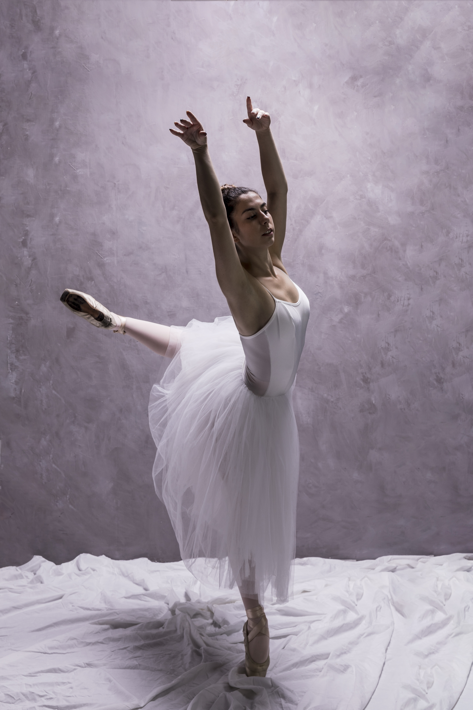

Hablemos de baile
Chat GPT define el baile como "una forma de expresión artística y corporal que utiliza el movimiento rítmico del cuerpo, generalmente acompañado de música, para comunicar emociones, contar historias o simplemente disfrutar del ritmo. Se puede realizar de manera individual, en pareja o en grupo, y varía ampliamente según la cultura, el estilo musical y el propósito (recreativo, ritual, competitivo, escénico, etc.)."
Así mismo, Chat GPT especifica los siguientes elementos clave del baile:
- Ritmo: coordinación con una base musical o percusiva.
- Movimiento corporal: desplazamientos, giros, pasos, gestos, etc.
- Expresión: transmite sentimientos, ideas o identidad cultural.
- Estilo: puede ser clásico (como el ballet), urbano (como hip-hop), social (como la salsa) o folclórico.


Historia

El baile nace mucho antes de la escritura como forma de comunicación no verbal. Era ritual: religioso, espiritual, para pedir lluvia, buena caza o sanar.
Ejemplo: danzas tribales africanas, indígenas, chamánicas.
🏺 2. Antigüedad (Egipto, Grecia, India, China)
- Egipto: el baile acompañaba rituales funerarios y celebraciones.
- Grecia y Roma: bailes teatrales y festivos. Grecia lo consideraba una forma de arte elevada.
- India: danzas con significado religioso codificadas (ej: Bharatanatyam).
- China: bailes imperiales con abanicos y seda, muy simbólicos.
🏰 3. Edad Media (siglos V–XV)
El baile se divide en:
- Popular: en ferias y aldeas (ej: farandole).
- Cortesano: en palacios, con coreografías refinadas.
La Iglesia lo reprime al principio, pero luego lo tolera en formas moderadas.
👑 4. Renacimiento y Barroco (siglos XV–XVIII)
Aparece el ballet en las cortes de Francia e Italia. Se sistematizan los pasos y técnicas.
El Rey Luis XIV impulsa el ballet como forma de arte cortesano.
💼 5. Siglo XIX – Popularización
- Auge de bailes sociales como el vals, polca, tango.
- Rusia se convierte en potencia del ballet (Ej: El Lago de los Cisnes).
- En América surgen danzas afroamericanas como el tap.
🎷 6. Siglo XX – Fusión Global
- Nacen ritmos latinos: salsa, mambo, bachata, merengue, samba.
- Explosión de estilos urbanos: jazz, swing, hip hop, rock & roll.
- Breakdance y cultura urbana se expanden globalmente.
📲 7. Siglo XXI – Digital & Cultural
Fusión de estilos. Las redes sociales como TikTok impulsan coreografías virales.
El baile hoy es expresión, salud, arte, cultura y entretenimiento.
Referentes
Salsa
Referentes de la salsa
Bacahata
Referentes de la bachata
Eventos
- Evento 1
- Evento 2
- Evento 3